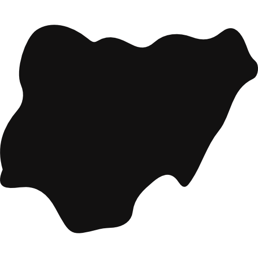

·Arrived at Murtala Muhammed International Airport in Lagos, Nigeria, marking the beginning of my journey.
·Departed from Nnamdi Azikiwe International Airport in Abuja, Nigeria, concluding my journey.
·Visited Balogun Market, a bustling marketplace known for its wide variety of goods and vibrant atmosphere.
·Attended Rema Concert in Nigeria, enjoying the vibrant music scene and live performances.
·Visited The Lekki-Ikoyi Link Bridge, an iconic cable-stayed bridge known for its stunning architecture and scenic views.
·Visited Elegushi Beach, a popular beach destination known for its lively atmosphere and beautiful coastline.
·Enjoyed a delicious chicken meal at the local house, experiencing a gift and authentic Nigerian cuisine and hospitality.